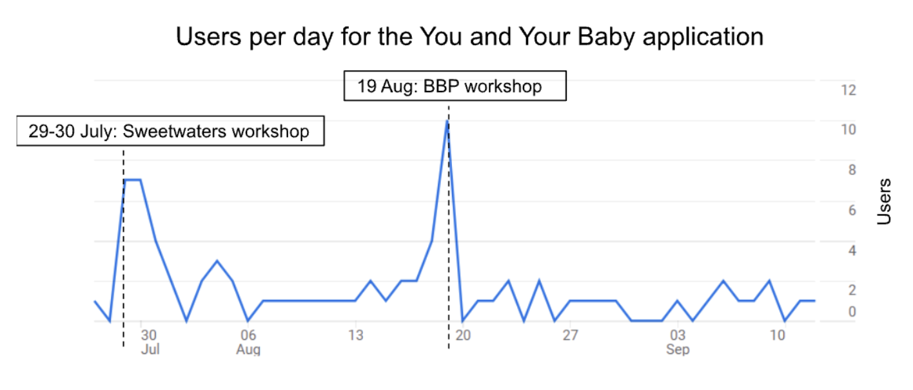

Mobile App Acceptance
An investigation into the response that caregivers from the BBP community and Sweetwaters had to the mobile app.
Introduction and Context
As technology has developed and has become more important in daily use, a variety of factors have been identified as influencing the acceptance of a technology by the users.
Users' motivations can be used by developers to improve the technology's design in an attempt to increase usage.
This study uses the Unified Theory of Acceptance-2 (UTAUT-2) to analyse the acceptance of the technology of these communities.
The key aims factors proposed by the UTAUT-2 as influencing users' usage of an application:
- Performance Expectancy: The degree to which the user believes that the system will assist them reach their goals- whether job-related or otherwise.
- Effort Expectancy: The degree to which the user perceives the system as being easy to use.
- Social Influence: the degree to which the user perceives that other individuals who are important to them will react to their use of the system.
- Facilitating Conditions: The degree to which the user believes that organisational and technical infrastructure exists to support their use of the system.
- Hedonic Motivation: The enjoyment a user derives from using the technology.
- Price Value: The user's perceived overall benefit or loss as a
result of whatever monetary cost there is to using the system.
- Habit: The extent to which people learn to perform behaviours automatically.
Given the socioeconomic differences between the communities of the BBP's beneficiaries and the community of Sweetwaters, these factors are proposed to have varying levels of effect on the overall usage of that community of the mobile application.
Methodology
Workshops
To facilitate conversations between researchers and the communities where the application was deployed, a series of workshops were held.
BBP Workshop 1
First, a workshop was held with BBP beneficiaries who had been using the app- with varying frequency- since its deployment in 2022.
This workshop provided researchers with key insights surrounding the issues with the previous application that rendered it unusable by the beneficiaries.
Additionally, participants provided researchers with essential feedback surrounding requirements and usability issues.
Sweetwaters
Once this team's iteration of the mobile app had been prototyped, we held a workshop in Sweetwaters, KZN, with nine participants- all of whom were mothers or grandmothers.
As this group of participants had not been part of the initial co-design process between past students and the BBP, this workshop consisted of introducing the application to them, iliciting feedback and a content creation workshop.
This content creation was necessary as the lack of an NGO in this space to proliferate content meant that the focus shifted to the community creating their own videos.
Google Analytics
Custom Google Analytics events were defined for various events during usage of the application.
Although the study did not run long enough to allow us to fully understand any trends present in usage of the application,
the results from this analysis of quantitative data show that the application should be used in the future.

Results of qualitative study
BBP Caretakers
- Effort Expectancy:The participants found the interface easy to use.
- Social Influence: The community of the BBP is more influenced by societal issues to use this application. This is due to societal stigma surrounding their children's disabilities
and the general lack of ECD content, specifically for children with developmental difficulties. This can also be seen in the results of the content creation workshop, where all topics brought up were
regarding medical terms.
- Performance Expectancy: The application provides childcare advice and physical therapy videos that caregivers can perform at home without the need for an in-person session. One parent noted that, due to work commitments, she had "missed Bhabhisana [sessions] for a few months. [The app] will help a lot."
- Facilitating Conditions: Most BBP beneficiaries noted having access to WiFi at home or at the BBP offices, meaning that they are able to use the application to view content.
Sweetwaters
- Effort Expectancy:Older participants did not ordinarily use their phones to complete many tasks, other than WhatsApp. The younger participants were still more likely to use the app as they reported using their phones daily to watch videos on TikTok.
- Social Influence: Participants were far too inter-connected and reliant on their families and communities to need an mHealth solution. This was reflected in the results of the content creation session, where most video topics offered up centered on entertainment or self-care.
- Performance Expectancy: Content proved to be useful for some participants, as they reported that they showed the app's videos to their children.
Conclusion
Although this was a short study, it can be seen that the usage of the You and Your Baby application varies between these two communities.
The specific participant group in Sweetwaters is too inter-connected through familial and friendly ties to require an external mHealth solution for basic childcare advice.
In the Bhabhisana community, however, the specific needs of the children make the caretakers more willing to use the resources available.
Overall, the content creation brainstorming sessions also indicated that despite the different needs of the communities, both communities would find use in the app, albeit for different topics.